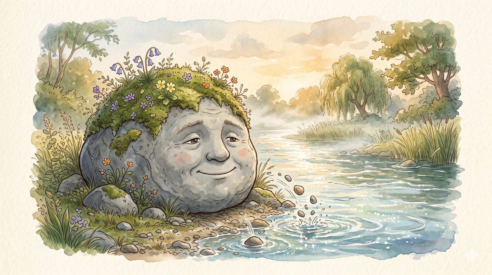
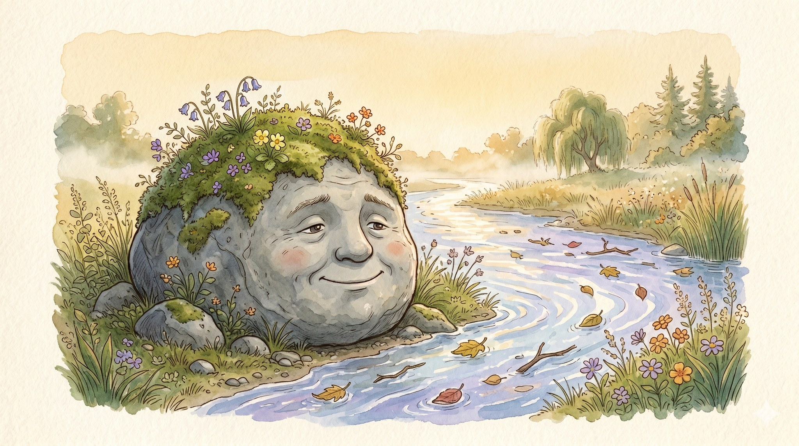
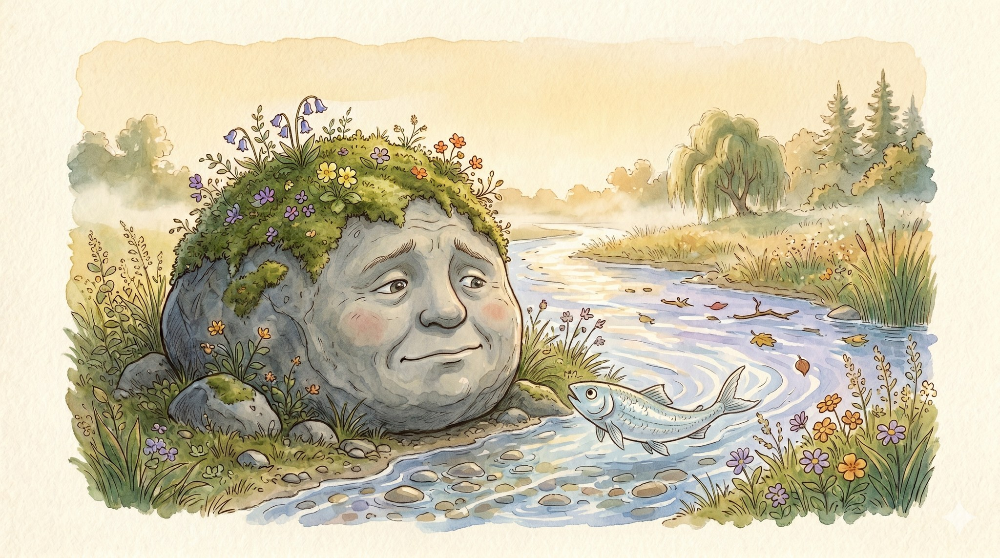
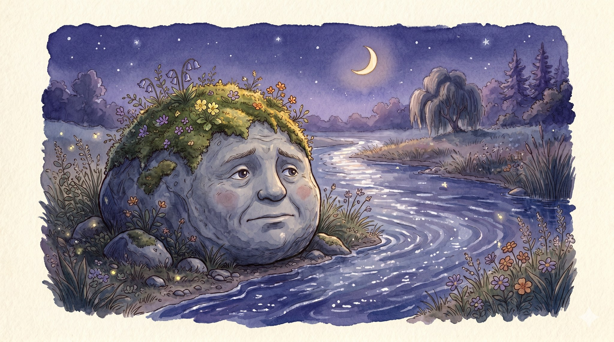
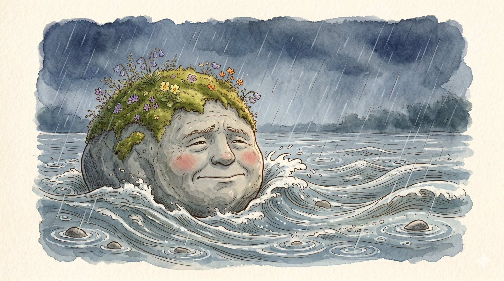
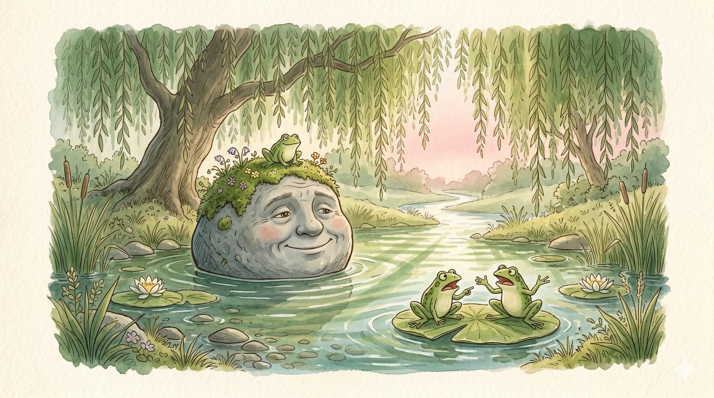

The Hundred-Year Stone

A story for ages 5–9 about how you can be scared and still try

There was a stone by the side of a small river. It had sat in that exact spot for a hundred years. Maybe more. Moss grew thick on its head, dotted with tiny wildflowers.
Every day, the stone watched the river. The river rushed. The river splashed. The river carried leaves and twigs and quick silver fish away to somewhere else.
The stone had never been anywhere else.

One bright afternoon, a small silver fish stopped beside the stone.
“Do you ever want to come along?” she asked, flicking her tail toward the rushing water. “There’s a meadow down there. A willow tree. A quiet pool with frogs in it.”
“I think I do want to come,” said the stone softly. “But I am scared.”
“You can be scared,” said the fish, “and still come. Those are not opposite things.”
Then — flick! — she was gone.

The stone thought about it for three whole days.
It thought through a sunny morning. It thought through a misty evening. It thought through a long, starry night, when the dark river glimmered in the moonlight and sounded like a hundred small voices, all saying come, come, come.
The stone thought, and thought, and thought.

On the fourth day, the rain came.
It rained all afternoon. The river grew bigger. The river grew stronger. The water climbed the bank until it reached the stone, and pushed, gently. Then a little more.
The stone could hold on. The stone could stay. The stone was very, very scared.
And the stone let go.

The river caught the stone, soft as a hand, and rolled it down the bank, around the bend, past the willow tree, all the way to a quiet green pool where three frogs were arguing about a lily pad.
The light fell through the willow leaves in soft green stripes. The stone looked back, all the way it had come.
“That was very, very scary,” said the stone.
A frog hopped up and sat on its mossy head.
“And I am okay.”
Trying something new is scary, and you can be scared and still try.
← Back to the library